Equal-six probability ensemble; FP32 identity RGB224. Twelve preselected exploratory validation examples. No training or test evaluation.
Open the12-page atlas | Verification receipt | Method and limitations
All branch maps explain the saved ensemble prediction. Independently normalized maps and their display composite are qualitative, not calibrated localization or proof of medical reasoning. CBAM panels show actual internal sigmoid gates.
correct_mel | Case PDF | Provenance
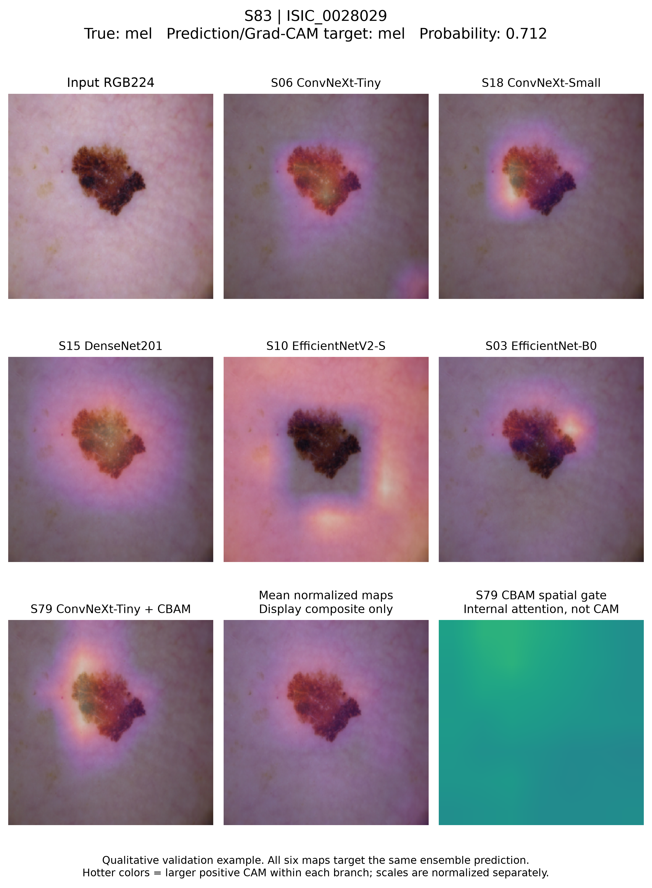
incorrect_mel | Case PDF | Provenance
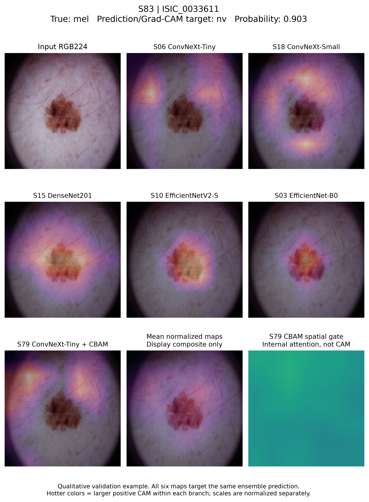
correct_akiec | Case PDF | Provenance
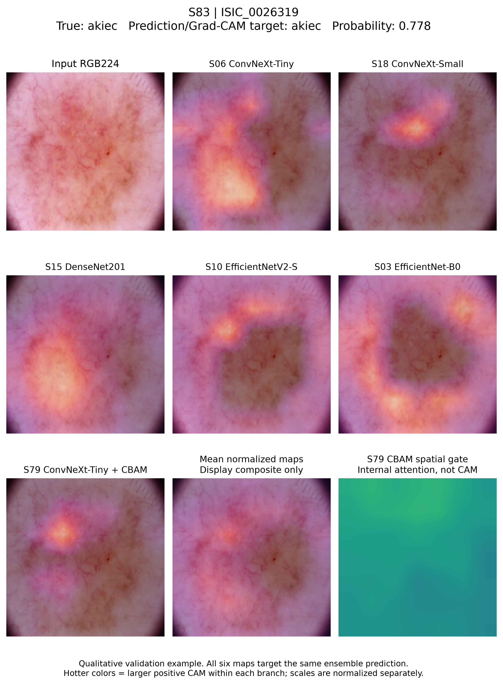
incorrect_akiec | Case PDF | Provenance
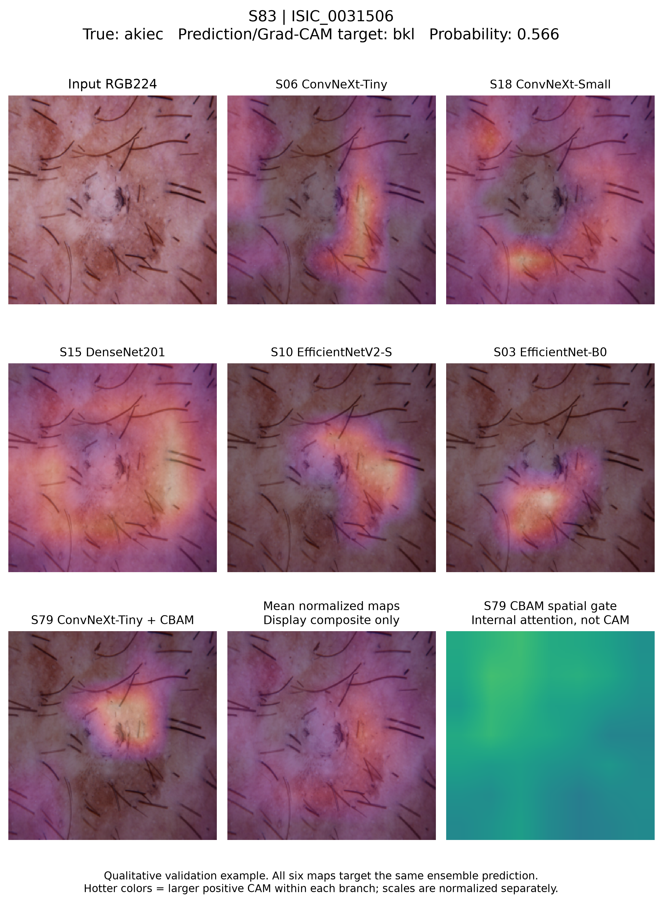
representative_bcc | Case PDF | Provenance
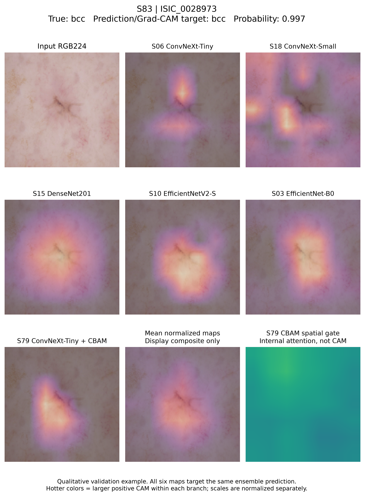
representative_bkl | Case PDF | Provenance
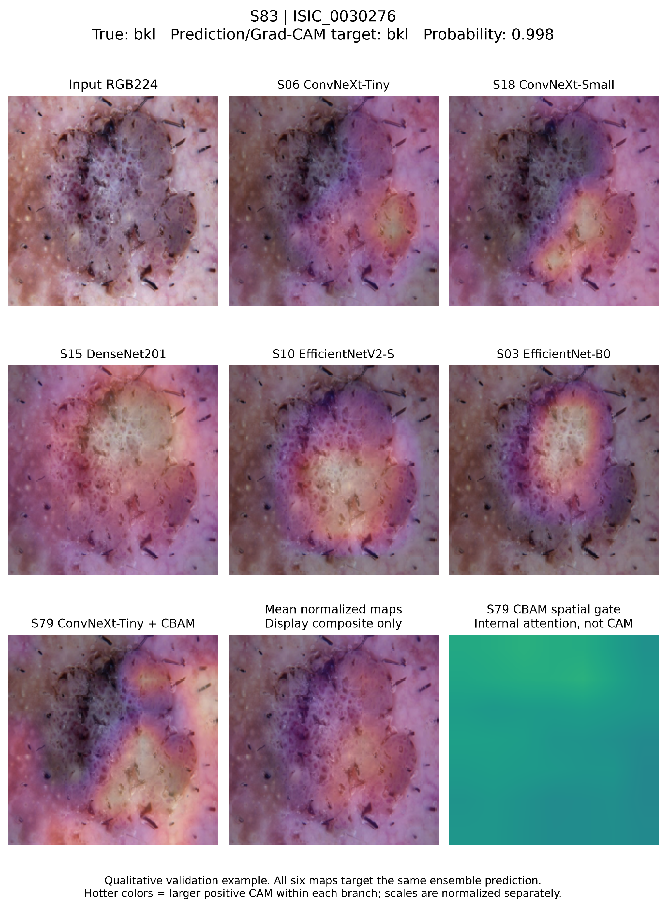
representative_df | Case PDF | Provenance
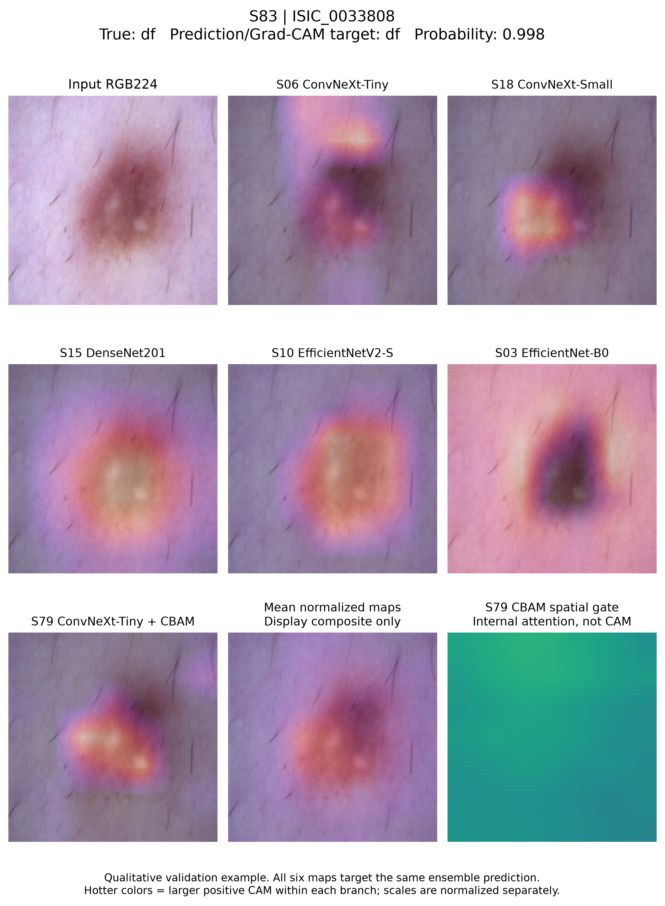
representative_nv | Case PDF | Provenance
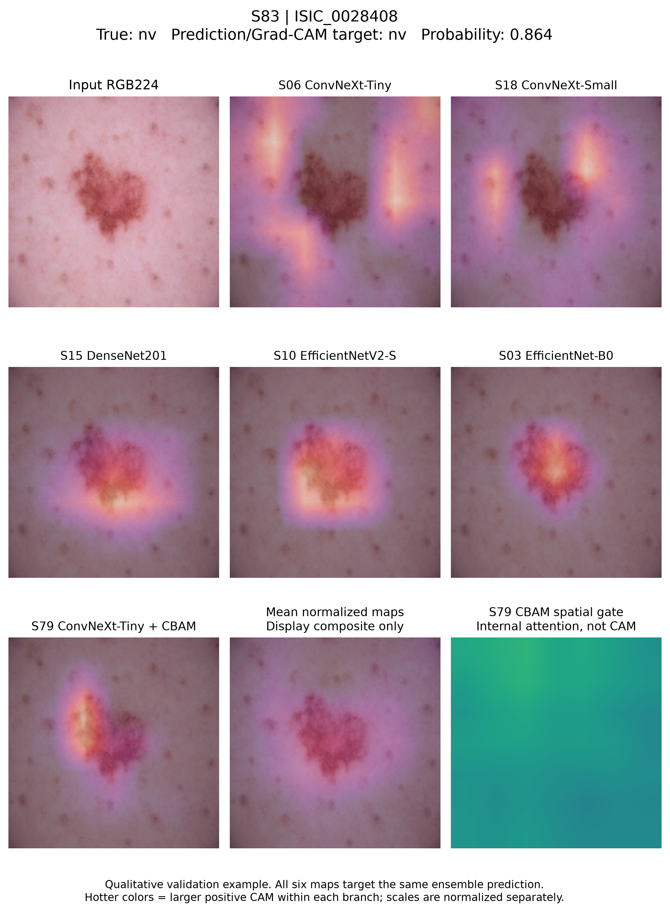
representative_vasc | Case PDF | Provenance
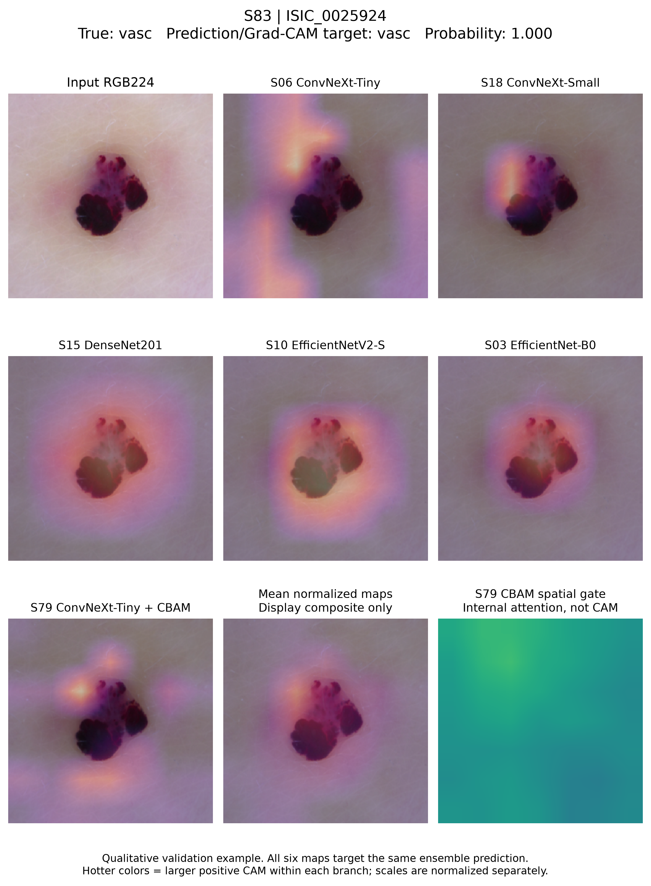
additional_error_1 | Case PDF | Provenance
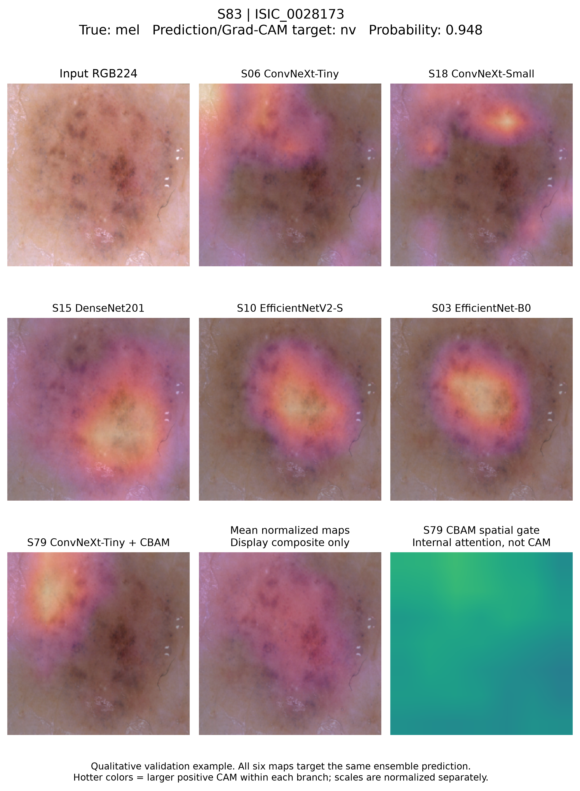
additional_error_2 | Case PDF | Provenance
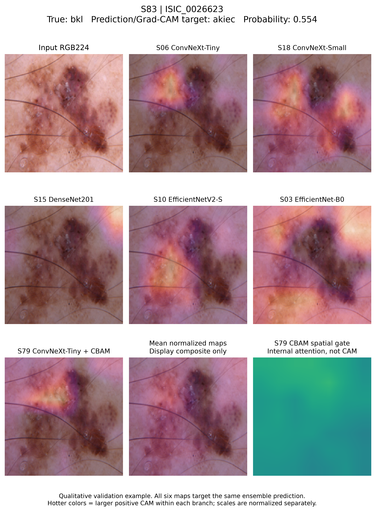
additional_error_3 | Case PDF | Provenance
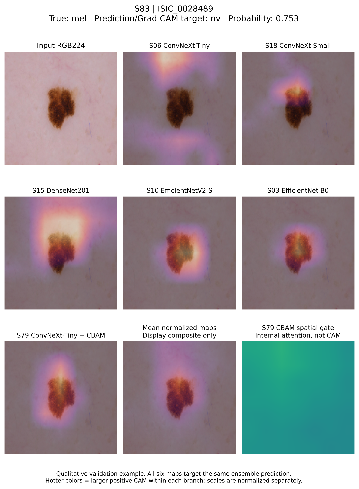